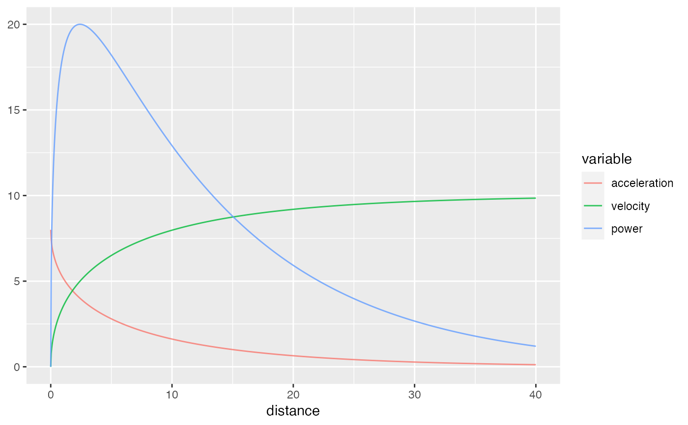

This function models the sprint instantaneous velocity using mono-exponential equation that estimates
maximum sprinting speed (MSS) and relative acceleration (TAU). velocity is used as target or outcome
variable, and distance as predictor.
model_tether(
distance,
velocity,
weights = 1,
CV = NULL,
use_observed_MSS = FALSE,
control = minpack.lm::nls.lm.control(maxiter = 1000),
na.rm = FALSE,
...
)Numeric vector
Numeric vector
Numeric vector. Default is 1
Should cross-validation be used to estimate model fit? Default is NULL. Otherwise use integer
indicating number of folds. See Example for more information
Should MSS be estimated from the observed velocity? Default is FALSE
Control object forwarded to nlsLM. Default is minpack.lm::nls.lm.control(maxiter = 1000)
Logical. Default is FALSE
Forwarded to nlsLM function
List object with the following elements:
List with the following estimated parameters:
MSS, TAU, MAC, and PMAX
List with the following components:
RSE, R_squared, minErr, maxErr, and RMSE
Model returned by the nlsLM function
Data frame used to estimate the sprint parameters, consisting of distance,
velocity, weights, and pred_velocity columns
distance <- c(5, 10, 20, 30, 40)
velocity <- predict_velocity_at_distance(distance, MSS = 10, MAC = 8)
m1 <- model_tether(distance = distance, velocity = velocity)
m1
#> Estimated model parameters
#> --------------------------
#> MSS TAU MAC PMAX
#> 10.00 1.25 8.00 20.00
#>
#> Model fit estimators
#> --------------------
#> RSE R_squared minErr maxErr maxAbsErr
#> 1.025580e-15 1.000000e+00 -1.776357e-15 0.000000e+00 1.776357e-15
#> RMSE MAE MAPE
#> 7.944109e-16 3.552714e-16 3.679839e-15
plot(m1)
